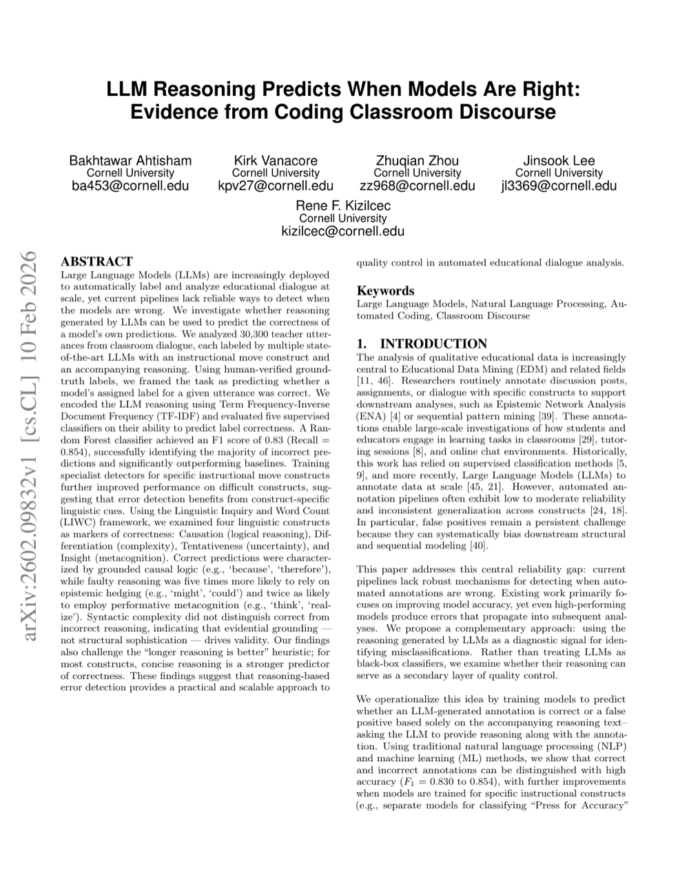

One-Line Summary
Development of an NLP-based tool for analyzing science classroom discourse

Figure 1. Development and evaluation of a dual-expertise, utterance-level framework for LLM-based science classroom discourse analysis.
Key Points
- Develops an NLP-based tool for automatically analyzing teacher-student discourse in science classes
- Systematically classifies classroom discourse patterns and presents an analysis framework applicable to real educational settings
NLP Fundamentals